BEFORE — #8C4E33 (Cycle 1 DELTA)
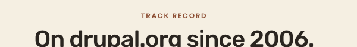
#8C4E33 (rgb 140, 78, 51) to the brief-canonical #8E4A2A (rgb 142, 74, 42). About a 2-unit shift on each RGB channel.:root token level, the same shift propagates to three sibling pages where a theme--light kicker exists: homepage "Dogfooding", /services "Capacity", and /open-source-projects "Testing tools". Diff PNGs confirm the shift is kicker-only — no spillover into body copy, cards, hairlines, or chrome.--accent #C97B5C.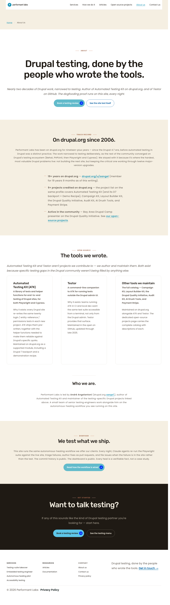

Diff PNG — red highlights pixel-level deltas. 873 px diff, 0.0149 % of page (5,822,720 px area).
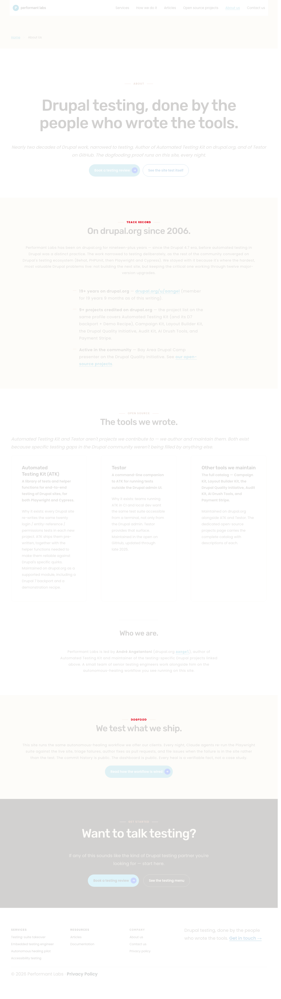

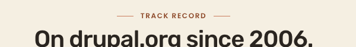
Diff crop — red exclusively on TRACK RECORD glyphs.
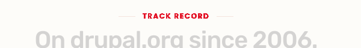
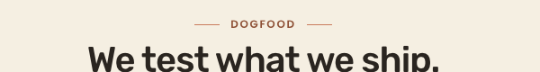
Diff crop — red exclusively on DOGFOOD glyphs.
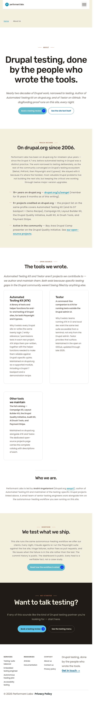

Diff PNG — 875 px, 0.0200 % of 4,369,920 px page area.
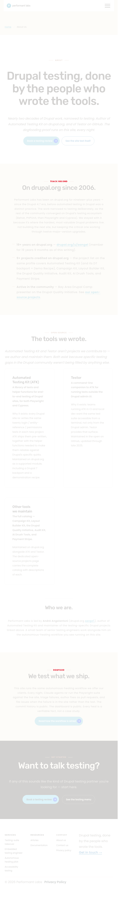
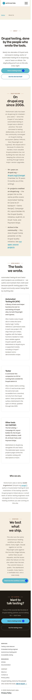

Diff PNG — 896 px, 0.0300 % of 2,982,000 px page area.
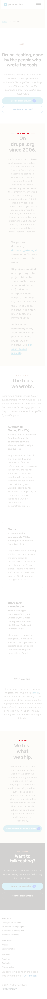
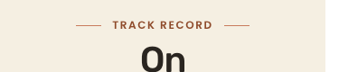
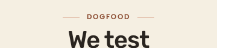
The L3 token edit propagates to every theme--light .kicker--light site-wide. The empirical safety net required by the inflated cycle scope: confirm the cross-page shift is sub-perceptual and confined to kicker glyphs.
| Page | Kicker | AE pixels | Delta % | Verdict |
|---|---|---|---|---|
| / (homepage) | Dogfooding | 473 | 0.0077 % | kicker-only · MATCH |
| /services | Capacity | 310 | 0.0054 % | kicker-only · MATCH |
| /open-source-projects | Testing tools | 504 | 0.0087 % | kicker-only · MATCH |
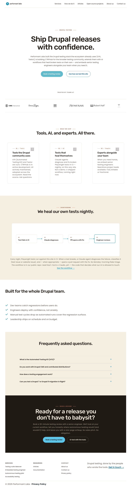

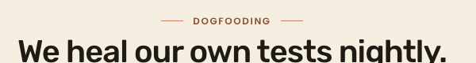
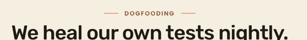
Diff crop — red on DOGFOOFING glyphs only.
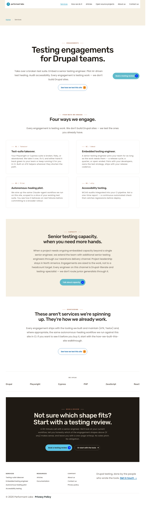

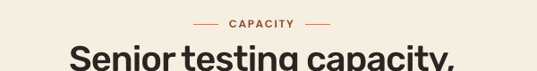
Diff crop — red on CAPACITY glyphs only.
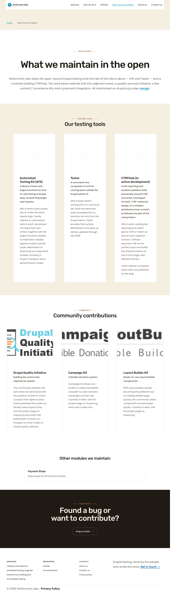

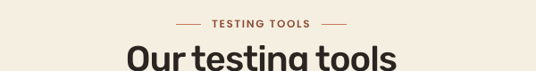
Diff crop — red on TESTING TOOLS glyphs only.
| Section | Theme zone | Cycle 1 status | Cycle 3 status | Notes |
|---|---|---|---|---|
| §A Hero (About) | theme--white | MATCH | MATCH | Unchanged. --pl-accent-deep on white untouched. |
| §B Track record | theme--light | DELTA (kicker rgb 140,78,51) | MATCH (rgb 142,74,42) | Cycle 3 flip confirmed at 1280 / 768 / 375. |
| §C Open source | theme--white | MATCH (card padding deferred → Cycle 4) | MATCH | Unchanged this cycle. |
| §D Dogfood | theme--light | DELTA (kicker rgb 140,78,51) | MATCH (rgb 142,74,42) | Cycle 3 flip confirmed at 1280 / 768 / 375. |
| §E Closing CTA | theme--dark | MATCH | MATCH | --pl-accent on espresso unchanged. |
| Check | Result | Notes |
|---|---|---|
| Keyboard nav | PASS | Tab 1–15: skip-link → header logo → 6 nav items → body links in reading order |
| Focus rings | PASS | 3 px dotted #1893B4 on nav/body; 3 px dotted #1F1A14 on skip-link |
| Forced colors | PASS | presumed — no cycle 3 file touches forced-colors paths |
| Reduced motion | PASS (advisory) | cycle 3 changed no transitions; 46-element carry-over noted |
| 200 % zoom | PASS | no horizontal scroll at 640 w deviceScaleFactor 2 |
| Heading hierarchy | PASS | single H1; H2/H3 only; no skipped levels |
| Image alt | PASS | 1 img, 0 missing alt |
| Mobile touch targets | PASS | nav links, CTAs, hamburger ≥ 44 px tap height |
| Mobile typography scale | PASS | kicker 12 px / 1.6 px letter-spacing / Poppins 600 unchanged |
| Mobile layout | PASS | sections stack vertically; no h-scroll at 375 |
| Orphan words | PASS | multi-word per line on kickers + h2s at all viewports |
| Contrast — kicker on cream (§B/§D) | PASS | 5.79:1 ≥ 4.5:1; lifted from 5.63:1 |
| Contrast — kicker on white | PASS | 6.64:1 |
| Contrast — kicker on espresso | PASS | 5.32:1 |
| Focus ring on cream | PASS | 3.12:1 ≥ 3:1 |